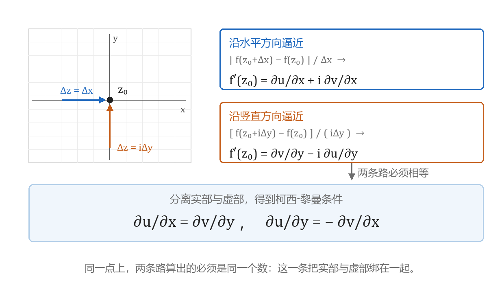
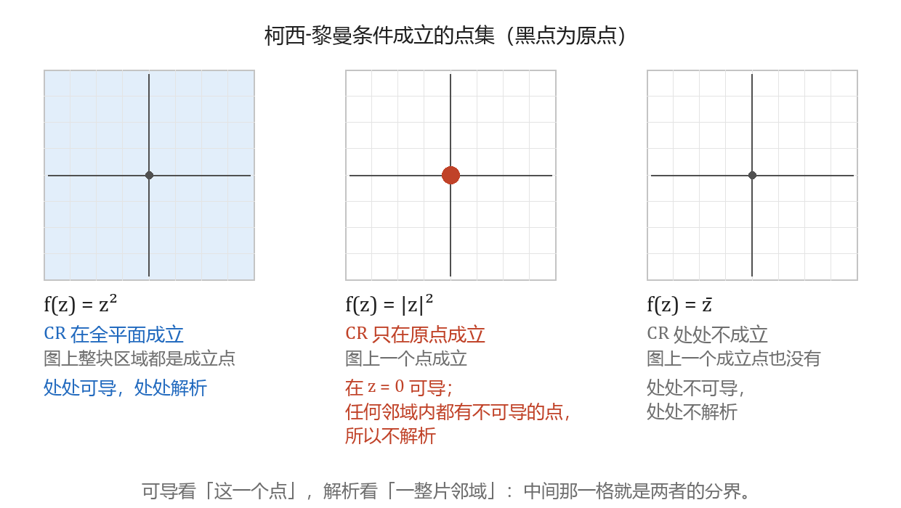
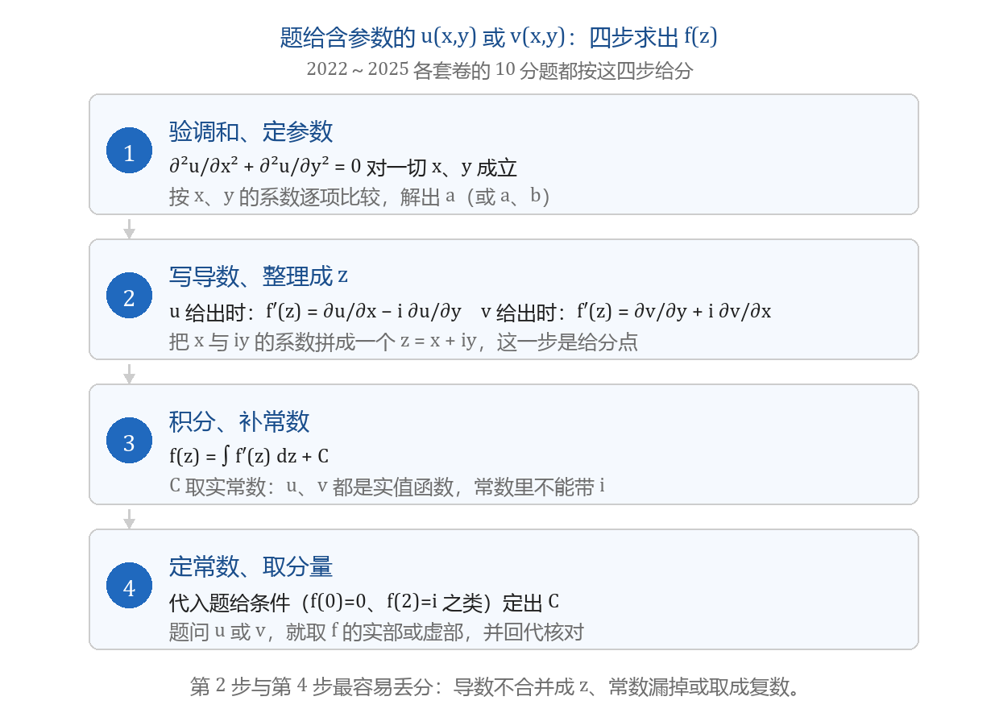

可导与解析的判定
本节目标：能判定解析性，并由调和函数求出解析函数 f(z)。
卷面怎么考
公开试卷里本节固定占两处：
- 解答题的一道 8～10 分大题：题给含参数的实部 u 或虚部 v（形如 x^2+xy+ay^2），先由调和条件定出参数，再求出解析函数 f(z)；有的题还追加 f(0)=0、f(2)=i 这类条件，用来定常数。
- 填空与选择（3～4 分）：问 f(z) 在 z_0 可导的充要条件是哪一条、下面哪个函数在 z=0 处不可导、哪个函数不能作解析函数的虚部、函数在区域内可导与解析是什么关系。概念简答还会单独问「判别解析的方法有哪几种」（西建大 10 分）。
这两类题考的是同一串动作：拆出 u 与 v → 求四个偏导 → 验柯西-黎曼条件 → 代导数公式。本节按这串动作推进，收在「由 u 或 v 求 f(z)」的大题上。
先唤醒偏导数
本节用到多元微积分的三条结论，先花几分钟捡回来。
第一，偏导的算法。对 x 求偏导时把 y 看成常数。取 u(x,y)=x^2y+y^3，则
u_x 与 \frac{\partial u}{\partial x} 是同一个记号，卷面两种写法都行。
第二，可微。实二元函数 u 在一点的增量若能写成
则称 u 在该点可微，等价于存在全微分 du = u_x\,dx + u_y\,dy。多项式与初等函数在定义域内都可微。这一条下一节用得上：柯西-黎曼条件单独只是必要条件，补上可微才成为充要条件。
第三，二阶混合偏导相等，u_{xy}=u_{yx}。所以后面写 u_{xy} 与 u_{yx} 不区分，推 u_{xx}+u_{yy}=0 时正要用它。
后面每一步都要把 f(z) 拆成 u+iv，先记下三条基本关系：z=x+iy 的实部是 x、虚部是 y；\bar z = x-iy 称为 z 的共轭复数；|z|^2 = z\bar z = x^2+y^2。例如
于是 u=x^2-y^2、v=-2xy。拆分的动作就是把含 i 的项归并到虚部。
复变函数的导数
导数定义与实函数同形：
区别在 \Delta z 是复数：它可以从平面上任何方向趋于 0，而这个极限只允许取一个值。实函数只有左右两个方向，复变函数有无穷多个方向，可导的要求因此严格得多。
求导法则照搬实函数的结论，常见函数不必回到定义：
和、差、积、商与复合函数的求导公式同样成立。可导必连续，连续不一定可导。
导数的模与辐角各有一个几何意思：|f'(z_0)| 是映射在该点的伸缩率，\arg f'(z_0) 是旋转角。西建大填空题考过「w=z^2 在 z=-i 处的伸缩率」：由 (z^2)'=2z 得 f'(-i)=-2i，伸缩率是 |-2i|=2。伸缩率与保角的关系留给实验三，这里只取这一条计算。
柯西-黎曼条件
设 f(z)=u(x,y)+iv(x,y) 在 z_0 可导。既然极限只有一个值，让 \Delta z 沿两条简单的方向趋于 0，算出的结果必须相同。
沿水平方向取 \Delta z=\Delta x（实数），增量只来自 x：\Delta u=u_x\Delta x、\Delta v=v_x\Delta x，于是
沿竖直方向取 \Delta z=i\Delta y：\Delta u=u_y\Delta y、\Delta v=v_y\Delta y，除以 i\Delta y 得
两式相等，分离实部与虚部：
这两个方程称为柯西-黎曼条件（Cauchy–Riemann conditions）。卷面写全称，口头常说 CR 条件。

assets/img/gen/可导与解析-柯西黎曼条件-两路逼近-本机-01.py），许可：本项目自产）同一条条件可以改写成四种导数写法，已知哪几个偏导就用哪一个：
| 已知 | 用哪一式 | 出现在哪里 |
|---|---|---|
| u 与 v 都有 | f'(z)=u_x+i v_x | 一般计算 |
| 只给 u | f'(z)=u_x-i u_y | 由实部求 f(z) 的大题 |
| 只给 v | f'(z)=v_y+i v_x | 由虚部求 f(z) 的大题 |
一个计算示范。设 f(z)=x^2-y^2+2xy i，求 f'(z)（西建大填空原题）：
u_x=v_y 与 u_y=-v_x 对一切 (x,y) 成立，所以 f 处处可导，且
认出这个函数就是 z^2 时可以直接求导得到同一个结果，算完可拿它自查。
柯西-黎曼条件本身只是必要条件。补上可微才成为可导的充要条件：
判据：f(z)=u+iv 在 z_0 可导，当且仅当 u、v 作为实二元函数在 (x_0,y_0) 可微，且在该点满足柯西-黎曼条件。
2022 年卷的选择题就考这个排列：四个选项分别是「u,v 连续」「u,v 有偏导数」「u,v 可微」「u,v 可微且满足 C-R 方程」，答案取最后一个。前三条各自都差一步。
填空题的另一种考法是把参数放在 u 与 v 里，用「处处解析」逼出参数。2022 年卷的填空：设 f(z)=x^2-2xy-y^2+i(ax^2+bxy+cy^2) 在复平面上处处解析，求 a+b+c。处处解析意味着柯西-黎曼条件对一切 x,y 成立，把四个偏导算出来比较系数：
第一式给 b=2、2c=-2 即 c=-1；第二式给 2a=2 即 a=1。于是 a+b+c=2。
极坐标下的形式
函数以 r、\theta 的形式给出时（z=re^{i\theta}），柯西-黎曼条件换成
导数写成 f'(z)=e^{-i\theta}(u_r+i v_r)。
用 1/z 核对一遍。\frac{1}{z}=\frac{1}{r}e^{-i\theta}，故 u=\frac{\cos\theta}{r}、v=-\frac{\sin\theta}{r}，
两条式子都成立。这一套在函数本身就是极坐标形式时省事，卷面出现得少，记住两条式子即可。
可导与解析
解析是本节的中心概念。若 f(z) 在 z_0 的某个邻域内处处可导，则称 f 在 z_0 解析；若 f 在区域 D 内处处解析，称 f 是 D 内的解析函数。
一点可导与解析只差一整个邻域，这一条把绝大多数函数挡在解析之外。最简单的例子是 f(z)=|z|^2：u=x^2+y^2、v=0，柯西-黎曼条件化为 2x=0 与 2y=0，只在原点成立。于是 f 只在 z=0 可导；以原点为心的任意小邻域里都有不可导的点，所以它在 z=0 也不解析。
「在区域内」与「在一点」要分开看，填空原题就落在这里（西建大）：
- f 在区域 D 内可导与 f 在 D 内解析是同一件事（充要条件）。理由只有一句：D 是开集，D 内任一点的小邻域仍落在 D 内，「区域内处处可导」逐点满足了解析的定义。
- f 在一点可导，推不出它在该点解析。
解析函数对四则运算与复合封闭：两个解析函数的和、差、积、商（分母不为零）与复合仍解析。所以 z^2、1/z、e^z、\sin z 在各自定义域内解析。\operatorname{Ln} z 要先选定分支：主值分支 \ln z 在去掉原点与负实轴的区域内解析，这一点上一课已经交代。
处处不解析的常见函数
选择题反复用这几个函数。判定只需一行：算出 u_x,u_y,v_x,v_y，看柯西-黎曼条件在哪些点成立。
| f(z) | u、v | 条件成立的点 | 结论 |
|---|---|---|---|
| \bar z | u=x,\ v=-y | 无 | 处处不可导，处处不解析 |
| |z|^2 | u=x^2+y^2,\ v=0 | 只有原点 | 仅在 z=0 可导，不解析 |
| \operatorname{Re} z | u=x,\ v=0 | 无 | 处处不可导，处处不解析 |
| \operatorname{Im} z | u=0,\ v=y | 无 | 处处不可导，处处不解析 |
| 2x+3yi | u=2x,\ v=3y | 无 | 处处不可导，处处不解析 |
| 2x^2+3y^2i | u=2x^2,\ v=3y^2 | 直线 4x=6y 上 | 沿线每点可导，处处不解析 |
| x^2-xyi | u=x^2,\ v=-xy | 只有原点 | 仅在 z=0 可导，不解析 |
| z^2,\ 1/z,\ e^z,\ \sin z | — | 定义域内处处 | 解析 |
第三列是关键：条件成立的范围决定结论。范围是一整片区域才谈得上解析；只有一两个点，就只能说那一点可导。

assets/img/gen/可导与解析-柯西黎曼条件-成立点集-本机-03.py），许可：本项目自产）图像画廊的实验二会把上面这张对照搬到复平面上：在网格上逐点估计偏导、逐点检验柯西-黎曼条件，画出 z^2 与 \bar z 的模—辐角着色对照，再把检验结果叠在同一批点上。课上的判据在那里变成逐点的数值测试。
调和函数
物理里求势场（静电场、稳定温度场）时得到的是拉普拉斯方程，满足它的实二元函数在本课程里叫调和函数。
定义：若实二元函数 u(x,y) 在区域 D 内有二阶连续偏导，且
在 D 内处处成立，则称 u 是 D 内的调和函数。
解析函数的实部与虚部都调和。以 u 为例：由 u_x=v_y 对 x 求偏导得 u_{xx}=v_{yx}，由 u_y=-v_x 对 y 求偏导得 u_{yy}=-v_{xy}；混合偏导相等，两式相加得 u_{xx}+u_{yy}=0。v 同理。
反过来，若 u 是单连通区域 D 内的调和函数，则 D 内存在以 u 为实部的解析函数 f，且这样的 f 之间相差一个纯虚常数。于是与 u 配对的虚部 v 被确定到一个实常数之内，这个 v 称为 u 的共轭调和函数。
考试有两条入口：
- 判断一个函数能否作解析函数的实部或虚部，先验它是否调和，即 \Delta u=u_{xx}+u_{yy}=0。2023 年卷的选择题问「下面哪个函数不能作为解析函数的虚部」，四个选项里 2x^2+3y^2 的 u_{xx}+u_{yy}=4+6=10\ne 0，不是调和函数，直接排除；另外三个都满足。
- 由调和函数求解析函数 f(z)，是下一节那套动作，也是本课分值最高的大题。
\Delta u 是 u_{xx}+u_{yy} 的简写，参考答案里直接写 \Delta v=v_{xx}+v_{yy}=0。
判别解析的三条路
概念简答问「判别解析的方法有哪几种」时，按这三条写：
- 按定义：验证 f 在 z_0 的某个邻域内处处可导。定义在卷面上不便直接算，主要用来回答概念题。
- 按充要条件：拆出 u、v，验二者可微，且柯西-黎曼条件在该点成立；条件在区域 D 内处处成立，则 f 在 D 内解析。判可导、判解析的计算题都走这一条。
- 按共轭调和函数：u、v 都是调和函数，且 v 是 u 的共轭调和函数，则 f=u+iv 解析。下一节的大题给的正是这个配置。
四步求出 f(z)
大题的动作固定，参考答案按四步给分。
- 验调和、定参数。把题给分量的四个偏导算完，让 u_{xx}+u_{yy}=0（或 v_{xx}+v_{yy}=0）对一切 x,y 成立；按 x、y 的各次项系数逐一比较，解出参数。
- 写导数、整理成 z。题给 u 时用 f'(z)=u_x-i u_y，题给 v 时用 f'(z)=v_y+i v_x；把结果按 z=x+iy 归并成一个 z 的式子。这一步是明确的给分点，停在 (2x-2y-2)+i(2x+y) 这样的形式要丢分。
- 积分、补常数。f(z)=\int f'(z)\,dz+C，C 取实常数：u、v 都是实值函数，常数里带 i 就错。
- 定常数、取分量。把题给条件（f(0)=0、f(2)=i 一类）代进去定出 C；题问 u 或 v，就取 f 的实部或虚部，再把结果代回题给分量核对。

assets/img/gen/可导与解析-解析性判定-求fz四步-本机-02.py），许可：本项目自产）完整例题（2024 年卷 A 第 5 题，10 分）：设 v(x,y)=x^2+xy+ay^2-2y 是调和函数，求 a 以及 u(x,y)，使 f(z)=u+iv 解析且 f(0)=0。
第一步，求偏导并令 \Delta v=0：
第二步，写导数并归并成 z：
第三步，积分：
第四步，由 f(0)=0 得 C=0。展开取实部：
核对：这个 f 的虚部是 (x^2-y^2)+xy-2y，与题给的 v 在 a=-1 时一致。
题给 u 的情形只改第二步的公式。2025 年卷 A 第 7 题：u=3x^2+2xy+ay^2，求 v 使 f(z)=u+iv 解析且 f(0)=0。
- 常数项漏掉，或写成复常数。参考答案里明写「没有常数项得 1 分」，并注明常数取实数。
- f'(z) 不整理成 z 的表达式。2022 年卷的原话是「f'(z) 需要写成 z 的表达式」，这一步单独给分。
- 题给条件没有代。f(0)=0、f(2)=i 这类条件是定常数用的，不用就丢掉最后一分。
- 跳过验调和直接定参数。参数是从 \Delta=0 解出来的，跳过这一步参数无从得到。
参考答案对这类题还给了一条「另解」：先由 u_x=v_y 积分得 u=\cdots+\psi(y)，再由 u_y=-v_x 解出 \psi'(y)。两条路给分相同；主线走 f'(z) 积分更快，因为顺带就把 f 写成了 z 的式子。
上手做：判定卡
这一课动手做两件事。
- 写一张判定卡。卡片上半是判可导与解析的四行：拆出 u、v → 求四个偏导 → 验 u_x=v_y 与 u_y=-v_x → 写出条件成立的点集，再按点集下结论（整片区域：解析；一两个点：只说那点可导）。卡片下半列判别解析的三种方法：按定义、按可微加柯西-黎曼条件、按共轭调和函数。这张卡收进纸笔题型整理册，后面每章判解析都翻它。
- 按大题格式独立算完一道「由 u 或 v 求 f(z)」的 10 分题，四步全写出来，最后用题给分量回代核对。
本课的小 lab 收在科目目录的 lab/ 下、目录名以 0005 开头：任务书、断言与参考解都在那里，lab/README.md 写着任务表与卡壳时的提示顺序。
带走的公式卡
| 要判什么 | 用什么 | 卷面位置 |
|---|---|---|
| 在一点是否可导 | u,v 可微且满足 u_x=v_y、u_y=-v_x | 填空、选择 |
| 在区域是否解析 | 区域内处处满足柯西-黎曼条件 | 填空原题「区域内可导是解析的什么条件」 |
| 哪些函数处处不解析 | \bar z、|z|^2、\operatorname{Re} z、\operatorname{Im} z | 选择 |
| 能否作实部或虚部 | 验 \Delta u=u_{xx}+u_{yy}=0 | 填空、选择 |
| 由 u 或 v 求 f(z) | \Delta=0 定参数 → 写 f'(z) 并归并成 z → 积分补实常数 → 定 C 后取分量 | 8～10 分大题 |
| 极坐标下的判定 | u_r=\frac{1}{r}v_\theta，v_r=-\frac{1}{r}u_\theta | 少见，备用 |
- 李君、于非非《复变函数与积分变换》§1.4 复变函数的可导与解析
- 合肥工业大学期末试卷（含答案与逐题分值）
- 西安建筑科技大学期末试卷（含答案）